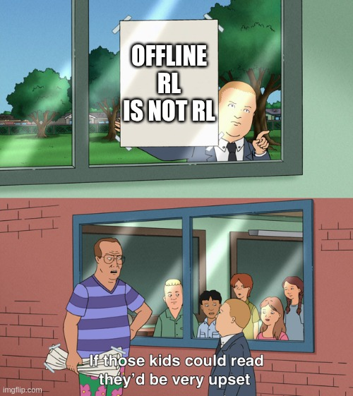
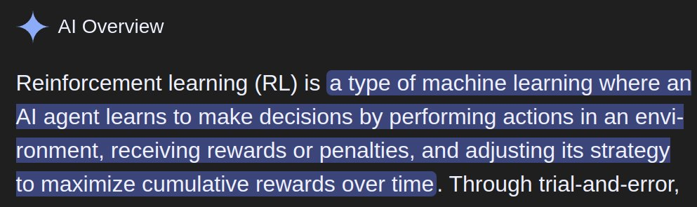

Offline RL is not RL
This is a short article. Read it before commenting or be cursed with 7 years of bad hyperparameters.
Unhinged RL
Reinforcement learning is the study of training agents through interaction with environments. But all the current methods assume agents can run code to perform high-precision numerical optimization. What if your agent cannot run code? This is a major blind spot in the literature!
Unhinging is a classic problem well-known to the general public. We summarize it for those who have not left this site recently. The agent assumes one of several positions holding a long rod with both hands. Metal tori of equal mass fit tightly around each end of the rod. The subject then completes a prescribed range of motion that invariably includes a difficult unhinging.
We apply reinforcement learning to the agent with a varied curriculum of unhinging repetitions and torus masses over a period of roughly 3 years. The maximal lift-able mass is observed to increase by a factor of 2.0 +/- 0.5. We note further gains after the subject read several replies to an earlier post on offline reinforcement learning that were apparently written by pre-RL era language models. Results below.
265 + 325 + 410 = 1000 at 187 lbs. Reinforcement learning starts with you!
...What?
First of all, the above content was brought to you by popular vote:
Okay, fine, I'll write a quick article on why offline RL ain't RL. But then I'm disappearing for a month to focus on research. Would you like your content posh or unhinged?
This is the context:
Offline RL is not RL. RL is about interaction. No interaction, no RL.
That's a lot of comments, including several by well-known researchers! Apparently, brevity is only the soul of wit until folks decide to overlook the smart interpretation of my point in favor of several dumber ones such as:
- Offline "RL" is not important
- The mathematical details of online RL and offline "RL" are not similar
- You are not allowed to use off-policy or labeled data to solve a problem
- I do not understand MDPs or credit assignment (??? no u)
- Real-time vs. stale data defines whether something is RL
- Learning on world models is not RL (tricky one - it is RL with respect to the world model but not with respect to the original problem)
Normally this is where a polite academic would make some minor concessions out of respect for cordial discussion. Unfortunately, I am neither.

Though I suppose in this case, the kids are upset because they can't read. Look, this is one of the most common stupid argument patterns I see on the internet. The only reasonable interpretation of "thing with X in name is not X, is "if this is X, your definition of X is bad."
Reinforcement learning is the study of learning through interaction in artificial intelligence
There, that's a useful definition. You know what, I'd even take the Google AI overview over most of what's in the comments:

Either way, it's one sentence that is simultaneously precise and sensible to laymen. Something something MDPs is neither. My definition centers around a core belief that interaction is fundamental to intelligence. It's certainly essential to human intelligence. That's what I consider the defining element of the field.
Definitions are not cool kids' clubs where leaving out Bobby is mean. They draw boundaries around the key idea of something. Including offline learning changes the essence of RL to something other than learning through interaction. If you agree that interaction is the key, then it makes more sense to include fitness than offline learning. Want to draw another line between offline learning and supervised learning? Sure, call it policy optimization.
@siddarthv66 Offline Optimization of Policies - aka OOPs, we shouldn't have called it offline RL!
If you would like to discuss the topic, drop by my livestreams on X/Twitch/YT. I'll be broadcasting consistent research for the whole next month. And if you'd like to support my work for free, check out PufferLib and star the GitHub. It's a high-performance reinforcement learning library for cutting edge research and newbie hobbyists alike.